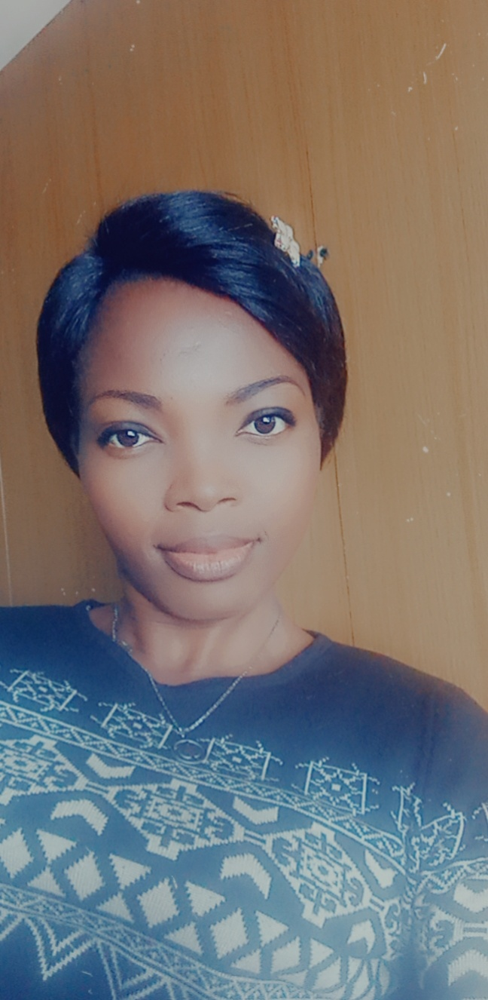

At RENFASHION our purpose is to make you look simple but classy. We specialize in the beautifying of ladies and girls
Our Team
Check out a few expert fashion designers in our team.

Meet Fortune Enudeme
Graduated from the Fortune Friends Fashion University, Lagos Nigeria
She has worked with the sewing industry for eight years and follows the best practices
in manipulating darts to enhance good shaping on clients
Meet Agu Pretty
Graduated from the Nigeria University of Fashion, Nsukka Nigeria
She has worked with the sewing industry for ten years and follows the best practices
in manipulating darts to enhance good shaping on clients